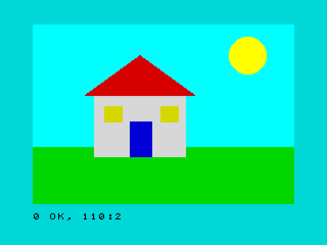

9. Dibujar
En este capítulo aprenderás a dibujar puntos, líneas, circunferencias y
arcos con PLOT, DRAW y CIRCLE, y figuras rellenas con BOX, DISC y
POLY.
Píxeles y coordenadas
La pantalla está hecha de puntitos llamados píxeles: 256 a lo ancho y
192 a lo alto en el modo 0. Para dibujar, dices qué píxel con dos números,
sus coordenadas: x (lo a la derecha que está) e y.
Para PLOT, DRAW y CIRCLE, el punto (0,0) es la esquina de abajo a la
izquierda, y la y crece hacia arriba, como en clase de matemáticas. La
x va de 0 a 255 y la y de 0 a 175 (las dos filas de caracteres de abajo
son para los mensajes).
PLOT, DRAW y CIRCLE
PLOT x,yenciende el píxel (x,y).DRAW dx,dydibuja una línea desde el último punto hasta otro que estádxpíxeles a la derecha ydypíxeles más arriba. Los números son relativos: dicen cuánto moverse, no adónde ir. Los negativos van a la izquierda o hacia abajo.CIRCLE x,y,rdibuja una circunferencia con el centro en (x,y) y radior.
10 PLOT 0,0
20 PLOT 255,175
30 PLOT 128,88
40 PLOT 20,150: DRAW 100,0: DRAW 0,-50: DRAW -100,50
50 CIRCLE 200,60,30
Las líneas 10 a 30 encienden tres píxeles: dos esquinas y el centro. La línea 40 dibuja un triángulo: desde (20,150), 100 a la derecha, 50 hacia abajo y vuelta al principio.
Cada dibujo puede llevar su color, como con PRINT:
10 BORDER 0: PAPER 0: CLS
20 FOR i=1 TO 7
30 CIRCLE INK i;128,88,i*12
40 NEXT i
10 PAPER 0: CLS
20 FOR x=0 TO 255 STEP 8
30 PLOT INK 6;x,0: DRAW INK 4;255-x,175
40 NEXT x
Arcos
DRAW con un tercer número dibuja un arco en vez de una línea recta. El
número es lo que gira, en radianes: PI es media vuelta. Los positivos se
curvan hacia un lado y los negativos hacia el otro:
10 PLOT 50,100: DRAW 150,0,PI
20 PLOT 50,120: DRAW 150,0,-PI/2
Curvas con matemáticas
SIN (el seno) da la altura de una onda. Dibuja un punto para cada x y
sale una curva:
10 FOR x=0 TO 255
20 PLOT x,88+60*SIN (x/128*2*PI)
30 NEXT x
Figuras rellenas: BOX, DISC y POLY
ZX-V añade órdenes que dibujan figuras rellenas, muy deprisa. Son parte de los gráficos para juegos que usarás en el capítulo 12, y funcionan de forma algo distinta:
- El color va primero, como un número del 0 al 15: del 0 al 7 son los colores normales y del 8 al 15 sus versiones brillantes (el 10 es el rojo brillante y el 14 el amarillo brillante).
- Las coordenadas empiezan en la esquina de arriba a la izquierda y la
ycrece hacia abajo, como las filas dePRINT AT. Layva de 0 a 191.
| Orden | Dibuja |
|---|---|
BOX c,x,y,an,al |
Un rectángulo relleno con la esquina de arriba a la izquierda en (x,y), de an de ancho y al de alto |
DISC c,x,y,r |
Un círculo relleno con el centro en (x,y) y radio r |
POLY c,x1,y1,x2,y2,x3,y3... |
Un polígono relleno con esas esquinas (hasta 64) |
Este programa enseña la diferencia entre las dos formas de contar la y:
10 PAPER 0: CLS
20 PLOT INK 7;10,10: DRAW INK 7;235,0
30 BOX 2,10,10,40,30
40 PRINT AT 21,0; INK 7;"BOX en 10,10"
La línea de PLOT 10,10 queda abajo; el rectángulo rojo en 10,10, arriba.
Con unas pocas figuras rellenas puedes pintar un cuadro entero:
10 BORDER 5: PAPER 5: CLS
20 REM el cielo y la hierba
30 BOX 13,0,0,256,120
40 BOX 4,0,120,256,56
50 REM el sol
60 DISC 14,210,30,18
70 REM la casa
80 BOX 7,60,70,90,60
90 POLY 2,50,70,105,30,160,70
100 BOX 1,95,95,22,35
110 BOX 6,70,80,18,16: BOX 6,125,80,18,16

El tejado es un POLY de tres esquinas: los dos extremos del alero y el
pico. Lo que se dibuja después queda encima, por eso las ventanas y la
puerta se dibujan después de la pared.
Pruébalo
- Dibuja una diana: cinco círculos rellenos, uno dentro de otro, alternando el rojo y el blanco.
- Añade un árbol al dibujo de la casa: entre los colores de siempre no hay
marrón, así que usa un
BOXamarillo para el tronco y unDISCverde para la copa. (ConPALETTEpodrías crear un marrón.)
Pista
Para la diana, dibuja primero el círculo más grande, con un bucle FOR que
vaya bajando de tamaño: FOR i=5 TO 1 STEP -1. El color se puede sacar de
i: rojo (2) cuando i es impar y blanco (7) cuando es par.
Una solución para el primero
10 PAPER 0: CLS
20 FOR i=5 TO 1 STEP -1
30 LET c=2: IF INT (i/2)=i/2 THEN LET c=7
40 DISC c,128,88,i*15
50 NEXT i
Referencia: PLOT, DRAW,
CIRCLE, BOX,
DISC, POLY,
Colores.
Siguiente: 10. Sonido y música · Anterior: 8. Los colores y la pantalla